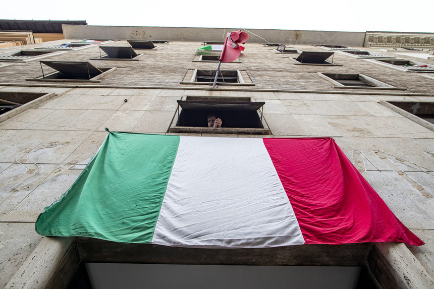

Italia
ItaliaFidelidade: Alta
Nas últimas 24 horas, Itália registou 437 mortos e 3.370 novos casos de coronavírus. O número de vítimas mortais aumentou de 24.648 para 25.085 em relação a ontem. Desde o início da pandemia, 187.327 pessoas já foram infetadas no país.
O número de recuperados subiu de 51.600 para 54.543.
Há 2.384 pessoas nos cuidados intensivos, menos 87 do que na terça-feira.
Fonte : Sic Noticias - 22/04/2020
Fidelidade: Alta
A Federação Italiana de Futebol (FIGC) reforçou esta quarta-feira que a sua "prioridade absoluta" é terminar a atual temporada da Série A e apontou novembro como uma possibilidade, estando disponível para atrasar o arranque da época 2020/21.
"A nossa prioridade absoluta é terminar as provas. Não há prazos. Se podermos jogar em junho, assim o faremos. Se for preciso, retomamos em setembro e encerramos o campeonato em novembro, com a próxima temporada a começar em janeiro do próximo ano", disse o presidente da Federação, Gabriele Gravina, em declarações ao jornal italiano La Repubblica.
Fonte : Diário de Noticias - 15/04/2020
(Deslize sobre o gráfico para ver casos em cada dia)